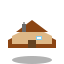
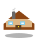
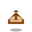
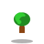
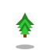
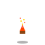
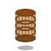
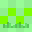
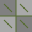

🏰 GUILAND - Набор спрайтов
🏠 Архитектура

house_farm_small.svg

house_farm_large.svg

windmill.svg

well.svg
🌳 Растительность

tree_oak_large.svg

tree_pine_tall.svg

crop_ready.svg
🔥 Мелкие объекты

campfire_lit.svg

barrel_wood.svg
🧱 Текстуры

grass_tile.svg
water_tile.svg

dirt_tile.svg

stone_floor.svg
📋 Инструкции по использованию
- Спрайты объектов: 64x64 пикселя, прозрачный фон
- Текстуры: 32x32 пикселя, бесшовные
- Стиль: Пиксель-арт, изометрический вид
- Цветовая палитра: Природные тона, совместимые между собой
Для конвертации в PNG:
Используйте онлайн конвертеры SVG в PNG или графические редакторы для экспорта спрайтов в нужном размере.
Дополнительные спрайты для создания:
- shed.svg - сарай
- barn.svg - амбар
- wooden_fence.svg - деревянный забор
- bush_flower_blue.svg - куст с синими цветами
- bush_flower_white.svg - куст с белыми цветами
- grass_patch_01.svg - участок травы
- crop_early.svg, crop_mid.svg - стадии роста урожая
- campfire_extinct.svg - потухший костер
- hay_stack.svg - стог сена
- crate_closed.svg, crate_open.svg - ящики
- signpost.svg - указатель
- bench_wood.svg - деревянная скамейка
- pathway_stone.svg - каменная дорожка
- toolbox.svg - ящик с инструментами